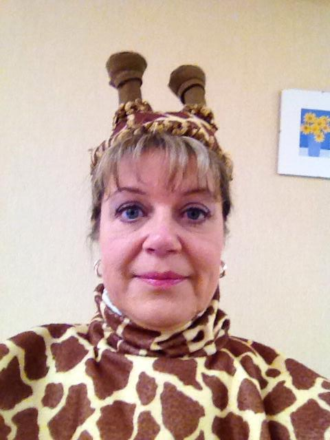
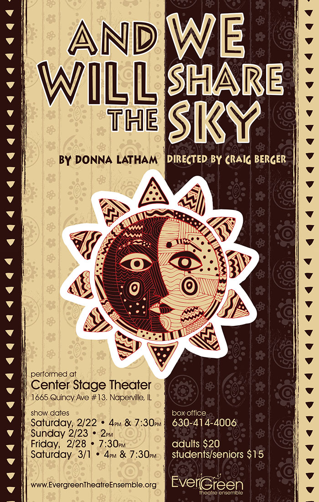

And We Will Share The Sky!
Note: this same post also appears on the other site — https://caroltownsendfan.blogspot.com/2014/02/and-we-will-share-sky.html. Both versions are kept; they differ slightly in length and each carries its own copy of the images.
A long time ago in a galaxy far, far away... No, wait-- that's a different story. But no less epic!
Where did the sun come from? Why is it dark at night? Where does the moon get its glow? Do giraffes poop in the bush? These, and other questions of the ages will be answered in Carol's upcoming show. Come and witness Carol extend her acting range as she disappears into the role of Gemma Giraffe! You won't believe your eyes!
EverGreen Theatre Ensemble presents And We Will Share The Sky, by Donna Latham.
Showtimes are:
- Saturday 2/22 @ 4:00 PM and 7:30 PM
- Sunday 2/23 @ 2:00 PM
- Friday 2/28 @ 7:30 PM
- Saturday 3/1 @ 4:00 PM and 7:30 PM
Tickets:
- Adults $20
- Students/Seniors $15
- Kids under 12 $10
- Half price for families of 4 or more
Performances will be held at Center Stage Theater in Naperville, 1665 Quincy Ave., #13.
Box Office:
- 630-414-4006
- EvergreenTheatreEnsemble.org


Originally published on caroltownsend.com
Comments (2)
Archived from the original site.
Hi great rreading your post
I can't wait to see Carol perform as Gemma Giraffe.